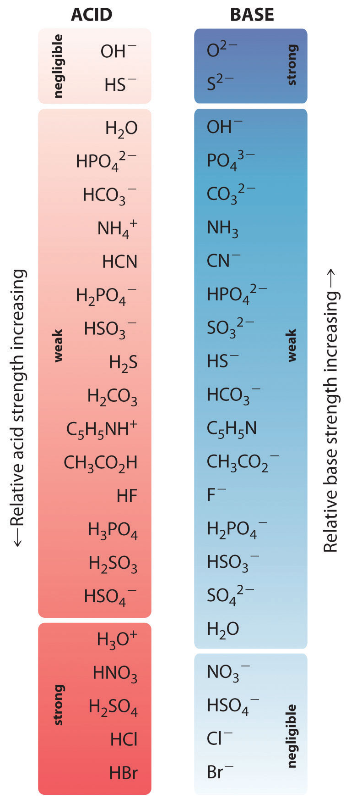
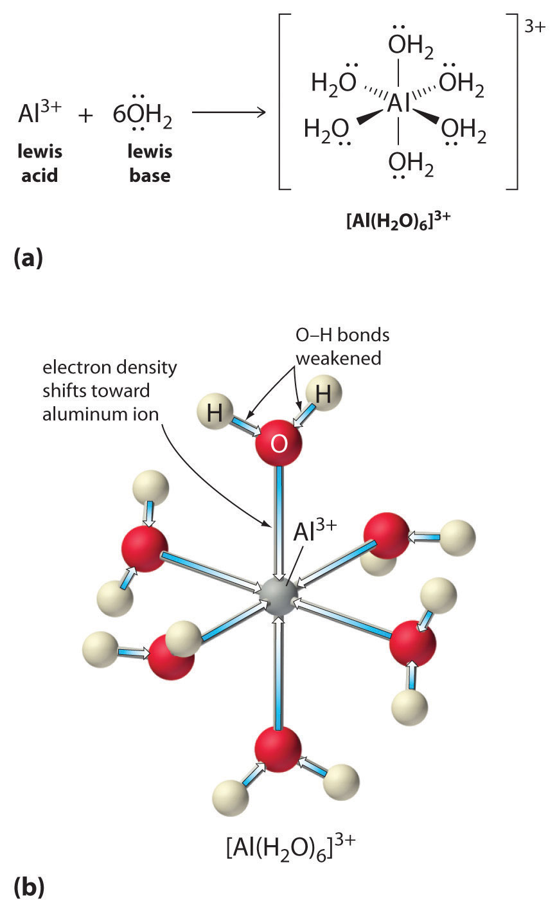
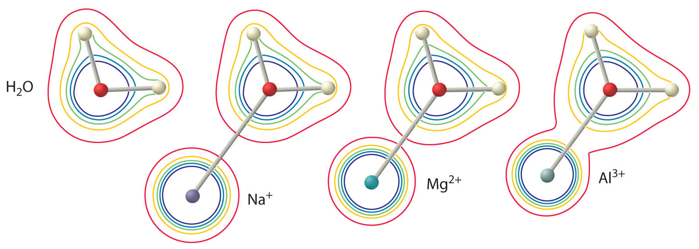

We now turn our attention to acid–base reactions to see how the concepts of chemical equilibrium and equilibrium constants can deepen our understanding of this kind of chemical behavior. We begin with a qualitative description of acid–base equilibriums in terms of the Brønsted–Lowry model and then proceed to a quantitative description in Section 16.4 "Quantitative Aspects of Acid–Base Equilibriums".
We discussed the concept of conjugate acid–base pairs in Chapter 4 "Reactions in Aqueous Solution", using the reaction of ammonia, the base, with water, the acid, as an example. In aqueous solutions, acids and bases can be defined in terms of the transfer of a proton from an acid to a base. Thus for every acidic species in an aqueous solution, there exists a species derived from the acid by the loss of a proton. These two species that differ by only a proton constitute a conjugate acid–base pairAn acid and a base that differ by only one hydrogen ion.. For example, in the reaction of HCl with water (Equation 16.1), HCl, the parent acid, donates a proton to a water molecule, the parent base, thereby forming Cl−. Thus HCl and Cl− constitute a conjugate acid–base pair. By convention, we always write a conjugate acid–base pair as the acid followed by its conjugate base. In the reverse reaction, the Cl− ion in solution acts as a base to accept a proton from H3O+, forming H2O and HCl. Thus H3O+ and H2O constitute a second conjugate acid–base pair. In general, any acid–base reaction must contain two conjugate acid–base pairs, which in this case are HCl/Cl− and H3O+/H2O.
All acid–base reactions contain two conjugate acid–base pairs.
Similarly, in the reaction of acetic acid with water, acetic acid donates a proton to water, which acts as the base. In the reverse reaction, H3O+ is the acid that donates a proton to the acetate ion, which acts as the base. Once again, we have two conjugate acid–base pairs: the parent acid and its conjugate base (CH3CO2H/CH3CO2−) and the parent base and its conjugate acid (H3O+/H2O).
In the reaction of ammonia with water to give ammonium ions and hydroxide ions (Equation 16.3), ammonia acts as a base by accepting a proton from a water molecule, which in this case means that water is acting as an acid. In the reverse reaction, an ammonium ion acts as an acid by donating a proton to a hydroxide ion, and the hydroxide ion acts as a base. The conjugate acid–base pairs for this reaction are NH4+/NH3 and H2O/OH−. Some common conjugate acid–base pairs are shown in Figure 16.2 "The Relative Strengths of Some Common Conjugate Acid–Base Pairs".
Figure 16.2 The Relative Strengths of Some Common Conjugate Acid–Base Pairs
The strongest acids are at the bottom left, and the strongest bases are at the top right. The conjugate base of a strong acid is a very weak base, and, conversely, the conjugate acid of a strong base is a very weak acid.
The magnitude of the equilibrium constant for an ionization reaction can be used to determine the relative strengths of acids and bases. For example, the general equation for the ionization of a weak acid in water, where HA is the parent acid and A− is its conjugate base, is as follows:
Equation 16.14
The equilibrium constant for this dissociation is as follows:
Equation 16.15
As we noted earlier, the concentration of water is essentially constant for all reactions in aqueous solution, so [H2O] in Equation 16.15 can be incorporated into a new quantity, the acid ionization constant (Ka)An equilibrium constant for the ionization (dissociation) of a weak acid (HA) with water, + ⇌ + in which the concentration of water is treated as a constant: = , also called the acid dissociation constant:
Equation 16.16
Thus the numerical values of K and Ka differ by the concentration of water (55.3 M). Again, for simplicity, H3O+ can be written as H+ in Equation 16.16. Keep in mind, though, that free H+ does not exist in aqueous solutions and that a proton is transferred to H2O in all acid ionization reactions to form H3O+. The larger the Ka, the stronger the acid and the higher the H+ concentration at equilibrium.Like all equilibrium constants, acid–base ionization constants are actually measured in terms of the activities of H+ or OH−, thus making them unitless. The values of Ka for a number of common acids are given in Table 16.2 "Values of ".
Table 16.2 Values of Ka, pKa, Kb, and pKb for Selected Acids (HA) and Their Conjugate Bases (A−)
| Acid | HA | K a | pKa | A− | K b | pKb |
|---|---|---|---|---|---|---|
| hydroiodic acid | HI | 2 × 109 | −9.3 | I− | 5.5 × 10−24 | 23.26 |
| sulfuric acid (1)* | H2SO4 | 1 × 102 | −2.0 | HSO4− | 1 × 10−16 | 16.0 |
| nitric acid | HNO3 | 2.3 × 101 | −1.37 | NO3− | 4.3 × 10−16 | 15.37 |
| hydronium ion | H3O+ | 1.0 | 0.00 | H2O | 1.0 × 10−14 | 14.00 |
| sulfuric acid (2)* | HSO4− | 1.0 × 10−2 | 1.99 | SO42− | 9.8 × 10−13 | 12.01 |
| hydrofluoric acid | HF | 6.3 × 10−4 | 3.20 | F− | 1.6 × 10−11 | 10.80 |
| nitrous acid | HNO2 | 5.6 × 10−4 | 3.25 | NO2− | 1.8 × 10−11 | 10.75 |
| formic acid | HCO2H | 1.78 × 10−4 | 3.750 | HCO2− | 5.6 × 10−11 | 10.25 |
| benzoic acid | C6H5CO2H | 6.3 × 10−5 | 4.20 | C6H5CO2− | 1.6 × 10−10 | 9.80 |
| acetic acid | CH3CO2H | 1.7 × 10−5 | 4.76 | CH3CO2− | 5.8 × 10−10 | 9.24 |
| pyridinium ion | C5H5NH+ | 5.9 × 10−6 | 5.23 | C5H5N | 1.7 × 10−9 | 8.77 |
| hypochlorous acid | HOCl | 4.0 × 10−8 | 7.40 | OCl− | 2.5 × 10−7 | 6.60 |
| hydrocyanic acid | HCN | 6.2 × 10−10 | 9.21 | CN− | 1.6 × 10−5 | 4.79 |
| ammonium ion | NH4+ | 5.6 × 10−10 | 9.25 | NH3 | 1.8 × 10−5 | 4.75 |
| water | H2O | 1.0 × 10−14 | 14.00 | OH− | 1.00 | 0.00 |
| acetylene | C2H2 | 1 × 10−26 | 26.0 | HC2− | 1 × 1012 | −12.0 |
| ammonia | NH3 | 1 × 10−35 | 35.0 | NH2− | 1 × 1021 | −21.0 |
| *The number in parentheses indicates the ionization step referred to for a polyprotic acid. | ||||||
Weak bases react with water to produce the hydroxide ion, as shown in the following general equation, where B is the parent base and BH+ is its conjugate acid:
Equation 16.17
The equilibrium constant for this reaction is the base ionization constant (Kb)An equilibrium constant for the reaction of a weak base (B) with water, + ⇌ + in which the concentration of water is treated as a constant: = , also called the base dissociation constant:
Equation 16.18
Once again, the concentration of water is constant, so it does not appear in the equilibrium constant expression; instead, it is included in the Kb. The larger the Kb, the stronger the base and the higher the OH− concentration at equilibrium. The values of Kb for a number of common weak bases are given in Table 16.3 "Values of ".
Table 16.3 Values of Kb, pKb, Ka, and pKa for Selected Weak Bases (B) and Their Conjugate Acids (BH+)
| Base | B | K b | pKb | BH+ | K a | pKa |
|---|---|---|---|---|---|---|
| hydroxide ion | OH− | 1.0 | 0.00* | H2O | 1.0 × 10−14 | 14.00 |
| phosphate ion | PO43− | 2.1 × 10−2 | 1.68 | HPO42− | 4.8 × 10−13 | 12.32 |
| dimethylamine | (CH3)2NH | 5.4 × 10−4 | 3.27 | (CH3)2NH2+ | 1.9 × 10−11 | 10.73 |
| methylamine | CH3NH2 | 4.6 × 10−4 | 3.34 | CH3NH3+ | 2.2 × 10−11 | 10.66 |
| trimethylamine | (CH3)3N | 6.3 × 10−5 | 4.20 | (CH3)3NH+ | 1.6 × 10−10 | 9.80 |
| ammonia | NH3 | 1.8 × 10−5 | 4.75 | NH4+ | 5.6 × 10−10 | 9.25 |
| pyridine | C5H5N | 1.7 × 10−9 | 8.77 | C5H5NH+ | 5.9 × 10−6 | 5.23 |
| aniline | C6H5NH2 | 7.4 × 10−10 | 9.13 | C6H5NH3+ | 1.3 × 10−5 | 4.87 |
| water | H2O | 1.0 × 10−14 | 14.00 | H3O+ | 1.0* | 0.00 |
| *As in Table 16.2 "Values of ". | ||||||
There is a simple relationship between the magnitude of Ka for an acid and Kb for its conjugate base. Consider, for example, the ionization of hydrocyanic acid (HCN) in water to produce an acidic solution, and the reaction of CN− with water to produce a basic solution:
Equation 16.19
Equation 16.20
The equilibrium constant expression for the ionization of HCN is as follows:
Equation 16.21
The corresponding expression for the reaction of cyanide with water is as follows:
Equation 16.22
If we add Equation 16.19 and Equation 16.20, we obtain the following (recall from Chapter 15 "Chemical Equilibrium" that the equilibrium constant for the sum of two reactions is the product of the equilibrium constants for the individual reactions):
In this case, the sum of the reactions described by Ka and Kb is the equation for the autoionization of water, and the product of the two equilibrium constants is Kw:
Equation 16.23
KaKb = KwThus if we know either Ka for an acid or Kb for its conjugate base, we can calculate the other equilibrium constant for any conjugate acid–base pair.
Just as with pH, pOH, and pKw, we can use negative logarithms to avoid exponential notation in writing acid and base ionization constants, by defining pKa as follows:
Equation 16.24
pKa = −log10KaEquation 16.25
and pKb as
Equation 16.26
pKb = −log10KbEquation 16.27
Similarly, Equation 16.23, which expresses the relationship between Ka and Kb, can be written in logarithmic form as follows:
Equation 16.28
pKa + pKb = pKwAt 25°C, this becomes
Equation 16.29
pKa + pKb = 14.00The values of pKa and pKb are given for several common acids and bases in Table 16.2 "Values of " and Table 16.3 "Values of ", respectively, and a more extensive set of data is provided in Chapter 27 "Appendix C: Dissociation Constants and p" and Chapter 28 "Appendix D: Dissociation Constants and p". Because of the use of negative logarithms, smaller values of pKa correspond to larger acid ionization constants and hence stronger acids. For example, nitrous acid (HNO2), with a pKa of 3.25, is about a 1000 times stronger acid than hydrocyanic acid (HCN), with a pKa of 9.21. Conversely, smaller values of pKb correspond to larger base ionization constants and hence stronger bases.
The relative strengths of some common acids and their conjugate bases are shown graphically in Figure 16.2 "The Relative Strengths of Some Common Conjugate Acid–Base Pairs". The conjugate acid–base pairs are listed in order (from top to bottom) of increasing acid strength, which corresponds to decreasing values of pKa. This order corresponds to decreasing strength of the conjugate base or increasing values of pKb. At the bottom left of Figure 16.2 "The Relative Strengths of Some Common Conjugate Acid–Base Pairs" are the common strong acids; at the top right are the most common strong bases. Notice the inverse relationship between the strength of the parent acid and the strength of the conjugate base. Thus the conjugate base of a strong acid is a very weak base, and the conjugate base of a very weak acid is a strong base.
The conjugate base of a strong acid is a weak base and vice versa.
We can use the relative strengths of acids and bases to predict the direction of an acid–base reaction by following a single rule: an acid–base equilibrium always favors the side with the weaker acid and base, as indicated by these arrows:
In an acid–base reaction, the proton always reacts with the stronger base.
For example, hydrochloric acid is a strong acid that ionizes essentially completely in dilute aqueous solution to produce H3O+ and Cl−; only negligible amounts of HCl molecules remain undissociated. Hence the ionization equilibrium lies virtually all the way to the right, as represented by a single arrow:
Equation 16.30
In contrast, acetic acid is a weak acid, and water is a weak base. Consequently, aqueous solutions of acetic acid contain mostly acetic acid molecules in equilibrium with a small concentration of H3O+ and acetate ions, and the ionization equilibrium lies far to the left, as represented by these arrows:
Figure 16.3
Similarly, in the reaction of ammonia with water, the hydroxide ion is a strong base, and ammonia is a weak base, whereas the ammonium ion is a stronger acid than water. Hence this equilibrium also lies to the left:
Figure 16.4
All acid–base equilibriums favor the side with the weaker acid and base. Thus the proton is bound to the stronger base.
Given: pKa and Kb
Asked for: corresponding Kb and pKb, Ka and pKa
Strategy:
The constants Ka and Kb are related as shown in Equation 16.23. The pKa and pKb for an acid and its conjugate base are related as shown in Equation 16.28 and Equation 16.29. Use the relationships pK = −log K and K = 10−pK (Equation 16.24 and Equation 16.26) to convert between Ka and pKa or Kb and pKb.
Solution:
We are given the pKa for butyric acid and asked to calculate the Kb and the pKb for its conjugate base, the butyrate ion. Because the pKa value cited is for a temperature of 25°C, we can use Equation 16.29: pKa + pKb = pKw = 14.00. Substituting the pKa and solving for the pKb,
Because pKb = −log Kb, Kb is 10−9.17 = 6.8 × 10−10.
In this case, we are given Kb for a base (dimethylamine) and asked to calculate Ka and pKa for its conjugate acid, the dimethylammonium ion. Because the initial quantity given is Kb rather than pKb, we can use Equation 16.23: KaKb = Kw. Substituting the values of Kb and Kw at 25°C and solving for Ka,
Because pKa = −log Ka, we have pKa = −log(1.9 × 10−11) = 10.72. We could also have converted Kb to pKb to obtain the same answer:
If we are given any one of these four quantities for an acid or a base (Ka, pKa, Kb, or pKb), we can calculate the other three.
Exercise
Lactic acid [CH3CH(OH)CO2H] is responsible for the pungent taste and smell of sour milk; it is also thought to produce soreness in fatigued muscles. Its pKa is 3.86 at 25°C. Calculate Ka for lactic acid and pKb and Kb for the lactate ion.
Answer: Ka = 1.4 × 10−4 for lactic acid; pKb = 10.14 and Kb = 7.2 × 10−11 for the lactate ion
You will notice in Table 16.2 "Values of " that acids like H2SO4 and HNO3 lie above the hydronium ion, meaning that they have pKa values less than zero and are stronger acids than the H3O+ ion.Recall from Chapter 4 "Reactions in Aqueous Solution" that the acidic proton in virtually all oxoacids is bonded to one of the oxygen atoms of the oxoanion. Thus nitric acid should properly be written as HONO2. Unfortunately, however, the formulas of oxoacids are almost always written with hydrogen on the left and oxygen on the right, giving HNO3 instead. In fact, all six of the common strong acids that we first encountered in Chapter 4 "Reactions in Aqueous Solution" have pKa values less than zero, which means that they have a greater tendency to lose a proton than does the H3O+ ion. Conversely, the conjugate bases of these strong acids are weaker bases than water. Consequently, the proton-transfer equilibriums for these strong acids lie far to the right, and adding any of the common strong acids to water results in an essentially stoichiometric reaction of the acid with water to form a solution of the H3O+ ion and the conjugate base of the acid.
Although Ka for HI is about 108 greater than Ka for HNO3, the reaction of either HI or HNO3 with water gives an essentially stoichiometric solution of H3O+ and I− or NO3−. In fact, a 0.1 M aqueous solution of any strong acid actually contains 0.1 M H3O+, regardless of the identity of the strong acid. This phenomenon is called the leveling effectThe phenomenon that makes the strongest acid that can exist in water. Any species that is a stronger acid than is leveled to the strength of in aqueous solution.: any species that is a stronger acid than the conjugate acid of water (H3O+) is leveled to the strength of H3O+ in aqueous solution because H3O+ is the strongest acid that can exist in equilibrium with water. Consequently, it is impossible to distinguish between the strengths of acids such as HI and HNO3 in aqueous solution, and an alternative approach must be used to determine their relative acid strengths.
One method is to use a solvent such as anhydrous acetic acid. Because acetic acid is a stronger acid than water, it must also be a weaker base, with a lesser tendency to accept a proton than H2O. Measurements of the conductivity of 0.1 M solutions of both HI and HNO3 in acetic acid show that HI is completely dissociated, but HNO3 is only partially dissociated and behaves like a weak acid in this solvent. This result clearly tells us that HI is a stronger acid than HNO3. The relative order of acid strengths and approximate Ka and pKa values for the strong acids at the top of Table 16.2 "Values of " were determined using measurements like this and different nonaqueous solvents.
In aqueous solutions, [H3O+] is the strongest acid and OH− is the strongest base that can exist in equilibrium with H2O.
The leveling effect applies to solutions of strong bases as well: In aqueous solution, any base stronger than OH− is leveled to the strength of OH− because OH− is the strongest base that can exist in equilibrium with water. Salts such as K2O, NaOCH3 (sodium methoxide), and NaNH2 (sodamide, or sodium amide), whose anions are the conjugate bases of species that would lie below water in Table 16.3 "Values of ", are all strong bases that react essentially completely (and often violently) with water, accepting a proton to give a solution of OH− and the corresponding cation:
Equation 16.31
Equation 16.32
Equation 16.33
Other examples that you may encounter are potassium hydride (KH) and organometallic compounds such as methyl lithium (CH3Li).
As you learned in Chapter 4 "Reactions in Aqueous Solution", polyprotic acids such as H2SO4, H3PO4, and H2CO3 contain more than one ionizable proton, and the protons are lost in a stepwise manner. The fully protonated species is always the strongest acid because it is easier to remove a proton from a neutral molecule than from a negatively charged ion. Thus acid strength decreases with the loss of subsequent protons, and, correspondingly, the pKa increases. Consider H2SO4, for example:
Figure 16.5
Equation 16.34
The equilibrium in the first reaction lies far to the right, consistent with H2SO4 being a strong acid. In contrast, in the second reaction, appreciable quantities of both HSO4− and SO42− are present at equilibrium.
For a polyprotic acid, acid strength decreases and the pKa increases with the sequential loss of each proton.
The hydrogen sulfate ion (HSO4−) is both the conjugate base of H2SO4 and the conjugate acid of SO42−. Just like water, HSO4− can therefore act as either an acid or a base, depending on whether the other reactant is a stronger acid or a stronger base. Conversely, the sulfate ion (SO42−) is a polyprotic base that is capable of accepting two protons in a stepwise manner:
Figure 16.6
Figure 16.7
Like any other conjugate acid–base pair, the strengths of the conjugate acids and bases are related by pKa + pKb = pKw. Consider, for example, the HSO4−/ SO42− conjugate acid–base pair. From Table 16.2 "Values of ", we see that the pKa of HSO4− is 1.99. Hence the pKb of SO42− is 14.00 − 1.99 = 12.01. Thus sulfate is a rather weak base, whereas OH− is a strong base, so the equilibrium shown in Figure 16.6 lies to the left. The HSO4− ion is also a very weak base [pKa of H2SO4 = 2.0, pKb of HSO4− = 14 − (−2.0) = 16], which is consistent with what we expect for the conjugate base of a strong acid. Thus the equilibrium shown in Figure 16.7 also lies almost completely to the left. Once again, equilibrium favors the formation of the weaker acid–base pair.
Predict whether the equilibrium for each reaction lies to the left or the right as written.
Given: balanced chemical equation
Asked for: equilibrium position
Strategy:
Identify the conjugate acid–base pairs in each reaction. Then refer to Table 16.2 "Values of ", Table 16.3 "Values of ", and Figure 16.2 "The Relative Strengths of Some Common Conjugate Acid–Base Pairs" to determine which is the stronger acid and base. Equilibrium always favors the formation of the weaker acid–base pair.
Solution:
The conjugate acid–base pairs are NH4+/NH3 and HPO42−/PO43−. According to Table 16.2 "Values of " and Table 16.3 "Values of ", NH4+ is a stronger acid (pKa = 9.25) than HPO42− (pKa = 12.32), and PO43− is a stronger base (pKb = 1.68) than NH3 (pKb = 4.75). The equilibrium will therefore lie to the right, favoring the formation of the weaker acid–base pair:
The conjugate acid–base pairs are CH3CH2CO2H/CH3CH2CO2− and HCN/CN−. According to Table 16.2 "Values of ", HCN is a weak acid (pKa = 9.21) and CN− is a moderately weak base (pKb = 4.79). Propionic acid (CH3CH2CO2H) is not listed in Table 16.2 "Values of ", however. In a situation like this, the best approach is to look for a similar compound whose acid–base properties are listed. For example, propionic acid and acetic acid are identical except for the groups attached to the carbon atom of the carboxylic acid (−CH2CH3 versus −CH3), so we might expect the two compounds to have similar acid–base properties. In particular, we would expect the pKa of propionic acid to be similar in magnitude to the pKa of acetic acid. (In fact, the pKa of propionic acid is 4.87, compared to 4.76 for acetic acid, which makes propionic acid a slightly weaker acid than acetic acid.) Thus propionic acid should be a significantly stronger acid than HCN. Because the stronger acid forms the weaker conjugate base, we predict that cyanide will be a stronger base than propionate. The equilibrium will therefore lie to the right, favoring the formation of the weaker acid–base pair:
Exercise
Predict whether the equilibrium for each reaction lies to the left or the right as written.
Answer:
We can also use the relative strengths of conjugate acid–base pairs to understand the acid–base properties of solutions of salts. In Chapter 4 "Reactions in Aqueous Solution", you learned that a neutralization reaction can be defined as the reaction of an acid and a base to produce a salt and water. That is, another cation, such as Na+, replaces the proton on the acid. An example is the reaction of CH3CO2H, a weak acid, with NaOH, a strong base:
Equation 16.35
Depending on the acid–base properties of its component ions, however, a salt can dissolve in water to produce a neutral solution, a basic solution, or an acidic solution.
When a salt such as NaCl dissolves in water, it produces Na+(aq) and Cl−(aq) ions. Using a Lewis approach, the Na+ ion can be viewed as an acid because it is an electron pair acceptor, although its low charge and relatively large radius make it a very weak acid. The Cl− ion is the conjugate base of the strong acid HCl, so it has essentially no basic character. Consequently, dissolving NaCl in water has no effect on the pH of a solution, and the solution remains neutral.
Now let's compare this behavior to the behavior of aqueous solutions of potassium cyanide and sodium acetate. Again, the cations (K+ and Na+) have essentially no acidic character, but the anions (CN− and CH3CO2−) are weak bases that can react with water because they are the conjugate bases of the weak acids HCN and acetic acid, respectively.
Figure 16.8
Figure 16.9
Neither reaction proceeds very far to the right as written because the formation of the weaker acid–base pair is favored. Both HCN and acetic acid are stronger acids than water, and hydroxide is a stronger base than either acetate or cyanide, so in both cases, the equilibrium lies to the left. Nonetheless, each of these reactions generates enough hydroxide ions to produce a basic solution. For example, the pH of a 0.1 M solution of sodium acetate or potassium cyanide at 25°C is 8.8 or 11.1, respectively. From Table 16.2 "Values of " and Figure 16.2 "The Relative Strengths of Some Common Conjugate Acid–Base Pairs", we can see that CN− is a stronger base (pKb = 4.79) than acetate (pKb = 9.24), which is consistent with KCN producing a more basic solution than sodium acetate at the same concentration.
In contrast, the conjugate acid of a weak base should be a weak acid (Figure 16.2 "The Relative Strengths of Some Common Conjugate Acid–Base Pairs"). For example, ammonium chloride and pyridinium chloride are salts produced by reacting ammonia and pyridine, respectively, with HCl. As you already know, the chloride ion is such a weak base that it does not react with water. In contrast, the cations of the two salts are weak acids that react with water as follows:
Figure 16.10
Figure 16.11
Figure 16.2 "The Relative Strengths of Some Common Conjugate Acid–Base Pairs" shows that H3O+ is a stronger acid than either NH4+ or C5H5NH+, and conversely, ammonia and pyridine are both stronger bases than water. The equilibrium will therefore lie far to the left in both cases, favoring the weaker acid–base pair. The H3O+ concentration produced by the reactions is great enough, however, to decrease the pH of the solution significantly: the pH of a 0.10 M solution of ammonium chloride or pyridinium chloride at 25°C is 5.13 or 3.12, respectively. This is consistent with the information shown in Figure 16.2 "The Relative Strengths of Some Common Conjugate Acid–Base Pairs", indicating that the pyridinium ion is more acidic than the ammonium ion.
What happens with aqueous solutions of a salt such as ammonium acetate, where both the cation and the anion can react separately with water to produce an acid and a base, respectively? According to Figure 16.10, the ammonium ion will lower the pH, while according to Figure 16.9, the acetate ion will raise the pH. This particular case is unusual, in that the cation is as strong an acid as the anion is a base (pKa ≈ pKb). Consequently, the two effects cancel, and the solution remains neutral. With salts in which the cation is a stronger acid than the anion is a base, the final solution has a pH < 7.00. Conversely, if the cation is a weaker acid than the anion is a base, the final solution has a pH > 7.00.
Solutions of simple salts of metal ions can also be acidic, even though a metal ion cannot donate a proton directly to water to produce H3O+. Instead, a metal ion can act as a Lewis acid and interact with water, a Lewis base, by coordinating to a lone pair of electrons on the oxygen atom to form a hydrated metal ion (part (a) in Figure 16.12 "Effect of a Metal Ion on the Acidity of Water"), as discussed in Chapter 4 "Reactions in Aqueous Solution". A water molecule coordinated to a metal ion is more acidic than a free water molecule for two reasons. First, repulsive electrostatic interactions between the positively charged metal ion and the partially positively charged hydrogen atoms of the coordinated water molecule make it easier for the coordinated water to lose a proton.
Second, the positive charge on the Al3+ ion attracts electron density from the oxygen atoms of the water molecules, which decreases the electron density in the O–H bonds, as shown in part (b) in Figure 16.12 "Effect of a Metal Ion on the Acidity of Water". With less electron density between the O atoms and the H atoms, the O–H bonds are weaker than in a free H2O molecule, making it easier to lose a H+ ion.
Figure 16.12 Effect of a Metal Ion on the Acidity of Water
(a) Reaction of the metal ion Al3+ with water to form the hydrated metal ion is an example of a Lewis acid–base reaction. (b) The positive charge on the aluminum ion attracts electron density from the oxygen atoms, which shifts electron density away from the O–H bonds. The decrease in electron density weakens the O–H bonds in the water molecules and makes it easier for them to lose a proton.
The magnitude of this effect depends on the following two factors (Figure 16.13 "The Effect of the Charge and Radius of a Metal Ion on the Acidity of a Coordinated Water Molecule"):
Figure 16.13 The Effect of the Charge and Radius of a Metal Ion on the Acidity of a Coordinated Water Molecule
The contours show the electron density on the O atoms and the H atoms in both a free water molecule (left) and water molecules coordinated to Na+, Mg2+, and Al3+ ions. These contour maps demonstrate that the smallest, most highly charged metal ion (Al3+) causes the greatest decrease in electron density of the O–H bonds of the water molecule. Due to this effect, the acidity of hydrated metal ions increases as the charge on the metal ion increases and its radius decreases.
Thus aqueous solutions of small, highly charged metal ions, such as Al3+ and Fe3+, are acidic:
Equation 16.36
The [Al(H2O)6]3+ ion has a pKa of 5.0, making it almost as strong an acid as acetic acid. Because of the two factors described previously, the most important parameter for predicting the effect of a metal ion on the acidity of coordinated water molecules is the charge-to-radius ratio of the metal ion. A number of pairs of metal ions that lie on a diagonal line in the periodic table, such as Li+ and Mg2+ or Ca2+ and Y3+, have different sizes and charges but similar charge-to-radius ratios. As a result, these pairs of metal ions have similar effects on the acidity of coordinated water molecules, and they often exhibit other significant similarities in chemistry as well.
Solutions of small, highly charged metal ions in water are acidic.
Reactions such as those discussed in this section, in which a salt reacts with water to give an acidic or basic solution, are often called hydrolysis reactionsA chemical reaction in which a salt reacts with water to yield an acidic or a basic solution.. Using a separate name for this type of reaction is unfortunate because it suggests that they are somehow different. In fact, hydrolysis reactions are just acid–base reactions in which the acid is a cation or the base is an anion; they obey the same principles and rules as all other acid–base reactions.
A hydrolysis reaction is an acid–base reaction.
Predict whether aqueous solutions of these compounds are acidic, basic, or neutral.
Given: compound
Asked for: acidity or basicity of aqueous solution
Strategy:
A Assess the acid–base properties of the cation and the anion. If the cation is a weak Lewis acid, it will not affect the pH of the solution. If the cation is the conjugate acid of a weak base or a relatively highly charged metal cation, however, it will react with water to produce an acidic solution.
B If the anion is the conjugate base of a strong acid, it will not affect the pH of the solution. If, however, the anion is the conjugate base of a weak acid, the solution will be basic.
Solution:
A The K+ cation has a small positive charge (+1) and a relatively large radius (because it is in the fourth row of the periodic table), so it is a very weak Lewis acid.
B The NO3− anion is the conjugate base of a strong acid, so it has essentially no basic character (Table 16.1 "Definitions of Acids and Bases"). Hence neither the cation nor the anion will react with water to produce H+ or OH−, and the solution will be neutral.
A The Cr3+ ion is a relatively highly charged metal cation that should behave similarly to the Al3+ ion and form the [Cr(H2O)6]3+ complex, which will behave as a weak acid:
B The Br− anion is a very weak base (it is the conjugate base of the strong acid HBr), so it does not affect the pH of the solution. Hence the solution will be acidic.
A The Na+ ion, like the K+, is a very weak acid, so it should not affect the acidity of the solution.
B In contrast, SO42− is the conjugate base of HSO4−, which is a weak acid. Hence the SO42− ion will react with water as shown in Figure 16.6 to give a slightly basic solution.
Exercise
Predict whether aqueous solutions of the following are acidic, basic, or neutral.
Answer:
Two species that differ by only a proton constitute a conjugate acid–base pair. The magnitude of the equilibrium constant for an ionization reaction can be used to determine the relative strengths of acids and bases. For an aqueous solution of a weak acid, the dissociation constant is called the acid ionization constant (Ka). Similarly, the equilibrium constant for the reaction of a weak base with water is the base ionization constant (Kb). For any conjugate acid–base pair, KaKb = Kw. Smaller values of pKa correspond to larger acid ionization constants and hence stronger acids. Conversely, smaller values of pKb correspond to larger base ionization constants and hence stronger bases. At 25°C, pKa + pKb = 14.00. Acid–base reactions always proceed in the direction that produces the weaker acid–base pair. No acid stronger than H3O+ and no base stronger than OH− can exist in aqueous solution, leading to the phenomenon known as the leveling effect. Polyprotic acids (and bases) lose (and gain) protons in a stepwise manner, with the fully protonated species being the strongest acid and the fully deprotonated species the strongest base. A salt can dissolve in water to produce a neutral, a basic, or an acidic solution, depending on whether it contains the conjugate base of a weak acid as the anion (A−), the conjugate acid of a weak base as the cation (BH+), or both. Salts that contain small, highly charged metal ions produce acidic solutions in water. The reaction of a salt with water to produce an acidic or a basic solution is called a hydrolysis reaction.
Acid ionization constant
Base ionization constant
Relationship between K a and K b of a conjugate acid–base pair
Equation 16.23: KaKb = Kw
Definition of p K a
Equation 16.24: pKa = −log10Ka
Definition of p K b
Equation 16.26: pKa = −log10Ka
Relationship between p K a and p K b of a conjugate acid–base pair
Equation 16.28: pKa + pKb = pKw
Equation 16.29: pKa + pKb = 14.00 (at 25°C)
Identify the conjugate acid–base pairs in each equilibrium.
Identify the conjugate acid–base pairs in each equilibrium.
Salts such as NaH contain the hydride ion (H−). When sodium hydride is added to water, it produces hydrogen gas in a highly vigorous reaction. Write a balanced chemical equation for this reaction and identify the conjugate acid–base pairs.
Write the expression for Ka for each reaction.
Write an expression for the ionization constant Kb for each reaction.
Predict whether each equilibrium lies primarily to the left or to the right.
Species that are strong bases in water, such as CH3−, NH2−, and S2−, are leveled to the strength of OH−, the conjugate base of H2O. Because their relative base strengths are indistinguishable in water, suggest a method for identifying which is the strongest base. How would you distinguish between the strength of the acids HIO3, H2SO4, and HClO4?
Is it accurate to say that a 2.0 M solution of H2SO4, which contains two acidic protons per molecule, is 4.0 M in H+? Explain your answer.
The alkalinity of soil is defined by the following equation: alkalinity = [HCO3−] + 2[CO32−] + [OH−] − [H+]. The source of both HCO3− and CO32− is H2CO3. Explain why the basicity of soil is defined in this way.
Why are aqueous solutions of salts such as CaCl2 neutral? Why is an aqueous solution of NaNH2 basic?
Predict whether aqueous solutions of the following are acidic, basic, or neutral.
When each compound is added to water, would you expect the pH of the solution to increase, decrease, or remain the same?
Which complex ion would you expect to be more acidic—Pb(H2O)42+ or Sn(H2O)42+? Why?
Would you expect Sn(H2O)42+ or Sn(H2O)64+ to be more acidic? Why?
Is it possible to arrange the hydrides LiH, RbH, KH, CsH, and NaH in order of increasing base strength in aqueous solution? Why or why not?
Arrange these acids in order of increasing strength.
Given solutions with the same initial concentration of each acid, which would have the highest percent ionization?
Arrange these bases in order of increasing strength:
Given solutions with the same initial concentration of each base, which would have the highest percent ionization?
Calculate the Ka and the pKa of the conjugate acid of a base with each pKb value.
Benzoic acid is a food preservative with a pKa of 4.20. Determine the Kb and the pKb for the benzoate ion.
Determine Ka and pKa of boric acid [B(OH)3], solutions of which are occasionally used as an eyewash; the pKb of its conjugate base is 4.80.
acid B < acid C < acid A (strongest)
Ka = 6.3 × 10−10 pKa = 9.20